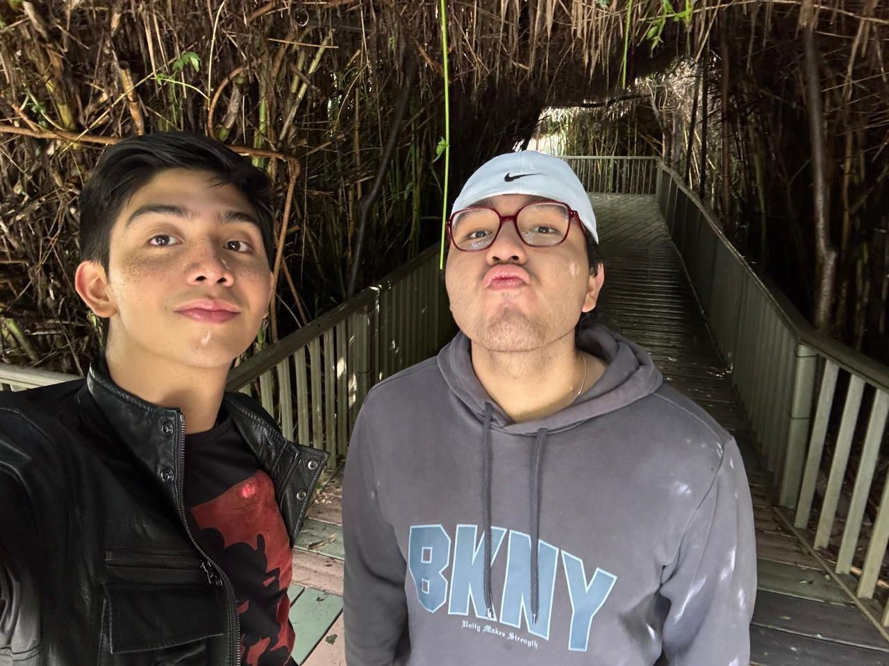

Esto no se debería sentir así
Desconozco si tomamos la decisión correcta no se siente como pensaba me siento vacío y te extraño como no tienes idea como desearía que las cosas hubieran sido diferentes. Perdón por haber insistido tanto durante tanto tiempo es que sino me hubiera arrepentido por el resto de mi vida si no hacia lo imposible para que te quedaras hoy veo que me he equivocado. Mereces amor y calma, mereces ser feliz y yo no voy arruinar nada de eso, si el destino nos quiere juntos nuestros caminos se volverán a cruzar. Cuenta conmigo para todo sin importar nada, que yo daría mi vida por ti y sería lo mínimo que haría por ti.
— 13/05/2026
